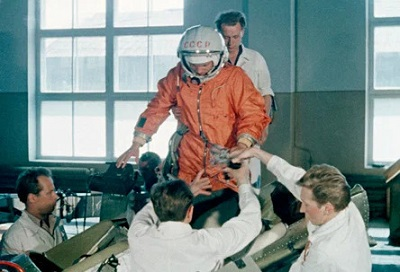
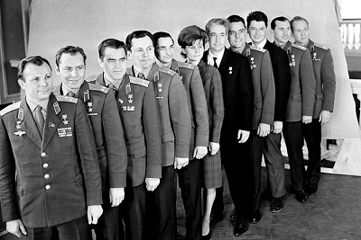

Подговка к полёту в космос
То, что первым космонавтом должен был стать лётчик реактивной истребительной авиации, у Главного конструктора Особого конструкторского бюро № 1 Госкомитета Совета Министров СССР по оборонной технике С. П. Королёва и его сподвижников сомнений не вызывало.
Для работы с космической техникой понадобились особые кандидаты — абсолютно здоровые, профессионально подготовленные, дисциплинированные, соответствующие всем предъявляемым физическим и медицинским требованиям.
Кроме Гагарина, на первый полёт в космос было ещё несколько претендентов. Всего их было двадцать человек - Первый отряд космонавтов СССР. Кандидаты набирались среди военных лётчиков-истребителей по решению Королёва, считавшего, что такие лётчики уже имеют опыт перегрузок, стрессовых ситуаций и перепадов давления.
Отбор в первый отряд космонавтов проводился на основании медицинских, психологических и ряда прочих параметров: возраст 25—30 лет, рост не более 170 см, вес не более 70—72 кг, способность к высотной и стратосферной адаптации, быстрота реакции, физическая выносливость, психическая уравновешенность.
Рост Юрия Гагарина, согласно официальной служебной характеристике, составлял 165 см, по другим же данным, — 157 см. Требования к росту и весу возникли из-за соответствующих ограничений на космический корабль «Восток», которые определялись мощностью ракеты-носителя «Восток». Кроме того, при отборе кандидатов учитывались положительная характеристика, членство в партии (Гагарин стал кандидатом в члены КПСС в 1959 году, а вступил в партию в июне 1960 года), политическая активность, социальное происхождение.
Из двадцати претендентов отобрали шестерых, ими стали: Юрий Гагарин, Герман Титов, Григорий Нелюбов, Андриян Николаев, Павел Попович и Валерий Быковский. В период с декабря 1960 года по январь 1961 года шестеро кандидатов в космонавты готовились к первому полёту в космос в городе Жуковском, где удалось создать на первое время самые непритязательные условия для работы. Центр подготовки космонавтов был уже учреждён, но практически ещё не работал, поэтому основные тренировки проходили в одном из филиалов Лётно-исследовательского института (ЛИИ), в лаборатории № 47, где находилась модель космического корабля «Восток-3А».
Позже Центр подготовки космонавтов всем наличным составом перебрался на постоянное место базирования — в Звёздный. Неподалёку, около станции Чкаловской, был создан первый жилой фонд — квартиры для размещения семей слушателей-космонавтов и части семей руководящего состава Центра подготовки космонавтов.
Тренировками космонавтов руководил знаменитый лётчик-испытатель Герой Советского Союза Марк Лазаревич Галлай. Когда кто-то из них занимал своё место в «шарике» корабля, Галлай говорил: «Поехали!», — и начиналось воспроизведение штатных и нештатных ситуаций полёта. Команда «Поехали!» звучала на каждой тренировке, к ней привыкли. А Марк Лазаревич рассказывал потом, что команду эту ещё до войны давал на тренировках один из лётчиков-инструкторов ленинградского аэроклуба, где учился летать сам Галлай.
К сдаче выпускных экзаменов 17—18 января 1961 года были допущены все 6 кандидатов в космонавты. Первый экзамен прошёл в филиале ЛИИ. Во время экзамена кандидаты в космонавты поочерёдно влезали в кабину космического корабля «Восток», служившую тренажёром. После экзамена на тренажёре будущий космонавт в течение 40—50 минут докладывал приёмной комиссии о работе на космическом корабле в штатных и нештатных ситуациях, отвечал на вопросы (оценки «отлично» получили Гагарин, Титов, Николаев и Попович, «хорошо» — Нелюбов и Быковский). На следующий день экзамены продолжились на военном аэродроме около посёлка Чкаловский. Там все показали отличные знания.
Рассмотрев личные дела, характеристики и результаты экзаменов, приёмная комиссия записала в акте:
«Рекомендуем следующую очерёдность использования космонавтов в полётах: Гагарин, Титов, Нелюбов, Николаев, Быковский, Попович».
25 января приказом Главкома ВВС № 21 все члены группы были первыми зачислены на должности космонавтов.
23 марта 1961 года командиром отряда был назначен Юрий Гагарин.
Королёв очень торопился, так как были данные, что 20 апреля 1961 года своего человека в космос отправят американцы. И поэтому старт планировалось назначить между 11 и 17 апреля 1961 года. Того, кто полетит в космос, определили в последний момент — на заседании Государственной комиссии выбрали Гагарина, его дублёром был назначен Герман Титов.
3 апреля 1961 года состоялось заседание Президиума ЦК КПСС, которое проводил секретарь ЦК КПСС Н. С. Хрущёв. По докладу заместителя Председателя Совета Министров СССР Д. Ф. Устинова Президиум ЦК принял решение о запуске человека в космос.
8 апреля 1961 состоялось закрытое заседание Государственной комиссии по пуску космического корабля «Восток», которую возглавлял Председатель Государственного комитета Совета Министров СССР по оборонной технике К. Н. Руднев. Комиссия утвердила первое в истории задание человеку на космический полёт, подписанное С. П. Королёвым и Н. П. Каманиным:
«Выполнить одновитковый полёт вокруг Земли на высоте 180—230 километров, продолжительностью 1 час 30 минут с посадкой в заданном районе. Цель полёта — проверить возможность пребывания человека в космосе на специально оборудованном корабле, проверить оборудование корабля в полёте, проверить связь корабля с Землёй, убедиться в надёжности средств приземления корабля и космонавта».
После открытой части заседания комиссия осталась в узком составе и утвердила предложение Каманина допустить в полёт Юрия Гагарина, а Титова утвердить как запасного космонавта.